01Watch video
Into the mist
@vmmatica
Creative strategy / Growth / Applied AI
I'm Andrew Lee. I build social audiences, run content experiments, and deliver campaigns—from the first brief to the performance report.
Explore selected work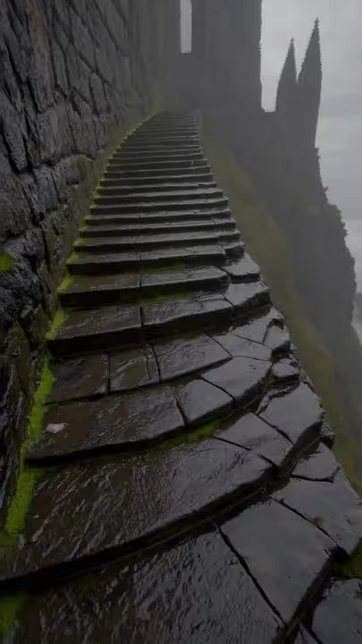
01 / @vmmatica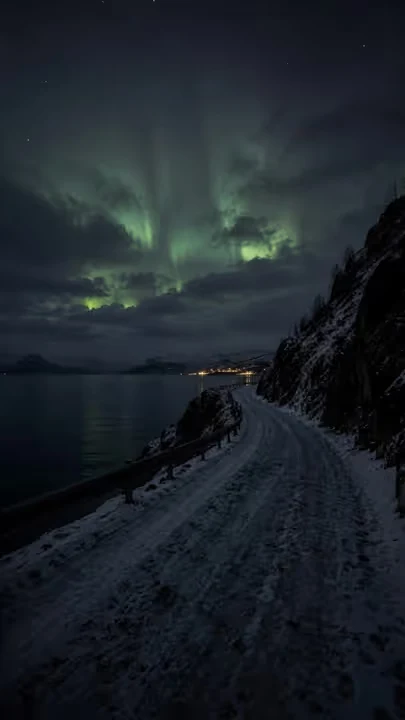
02 / @vpolarissFollower snapshot · October 21, 2026 · Combined account counts, not unique people. Campaign and lifetime results from my work records.
01 / Selected content
A selection of popular posts across my three TikTok accounts. AI-assisted visuals, editing, and sound selection, with public view counts.
@vmmatica
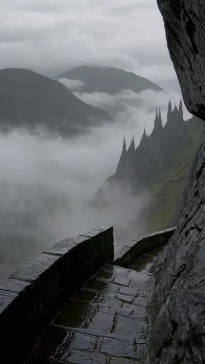
02Watch video@vpolariss
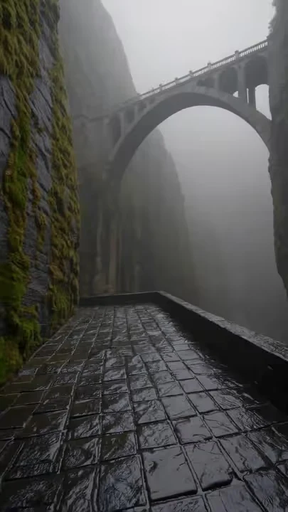
03Watch video@vjubzzs
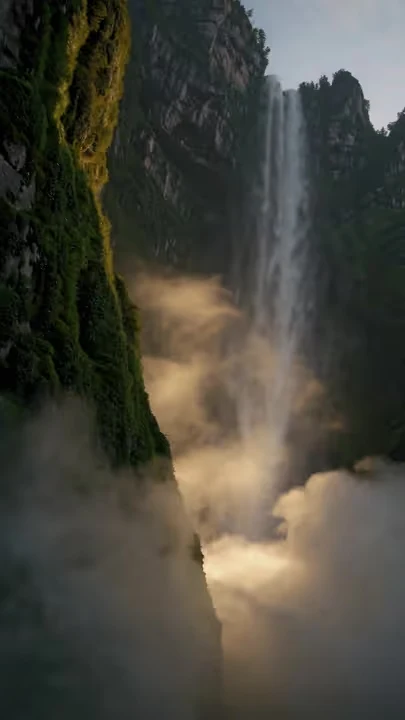
04Watch video@vmmatica
@vpolariss
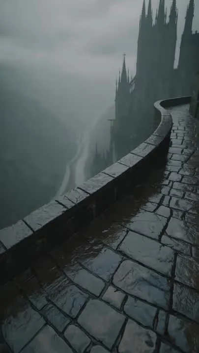
06Watch video@vjubzzs
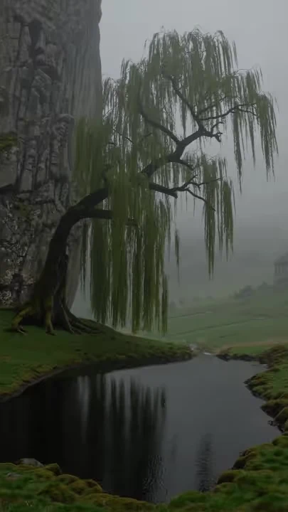
07Watch video@vmmatica
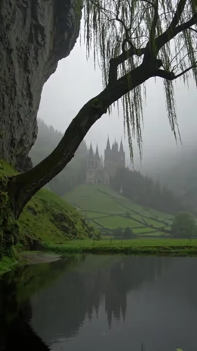
08Watch video@vpolariss
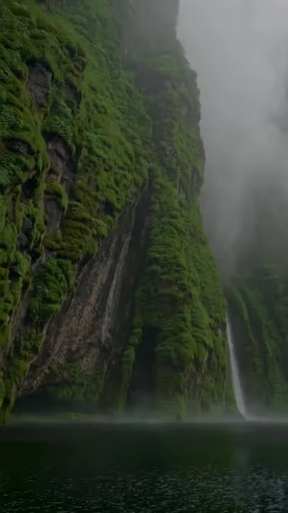
09Watch video@vjubzzs
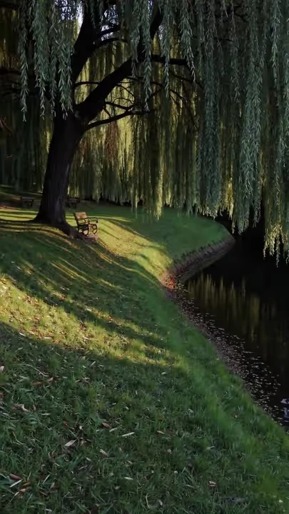
10Watch video@vmmatica
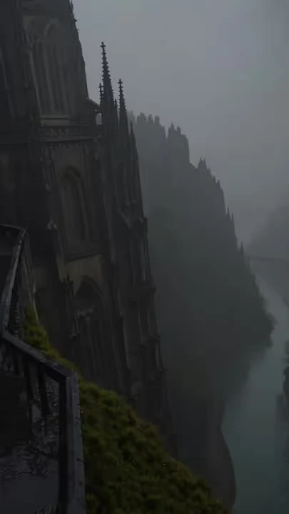
11Watch video@vpolariss
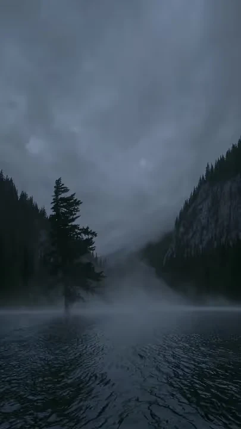
12Watch video@vjubzzs
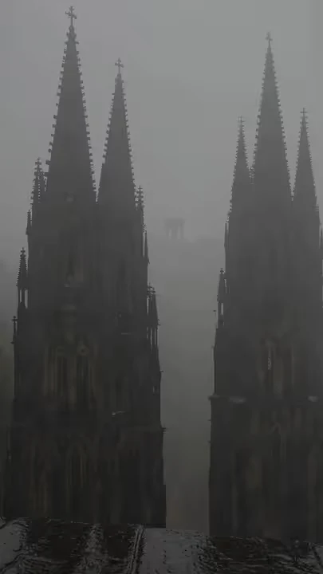
13Watch video@vmmatica
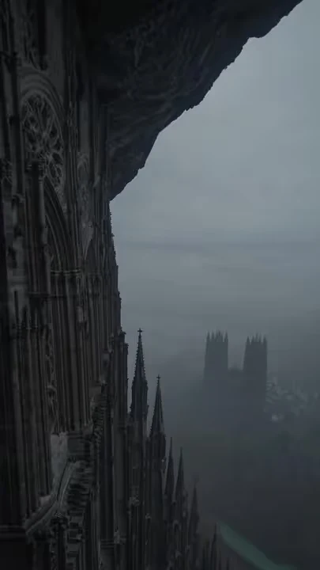
14Watch video@vpolariss
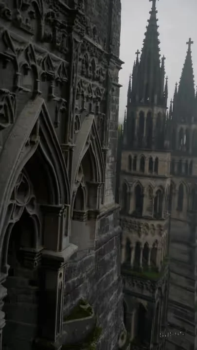
15Watch video@vjubzzs
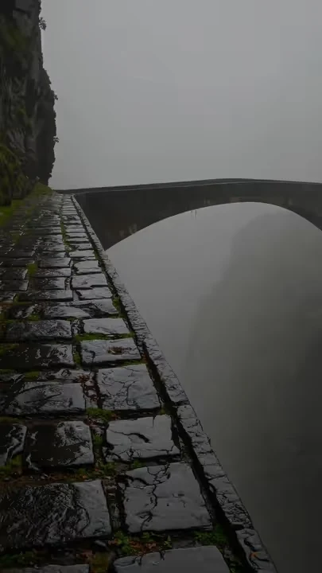
16Watch video@vmmatica
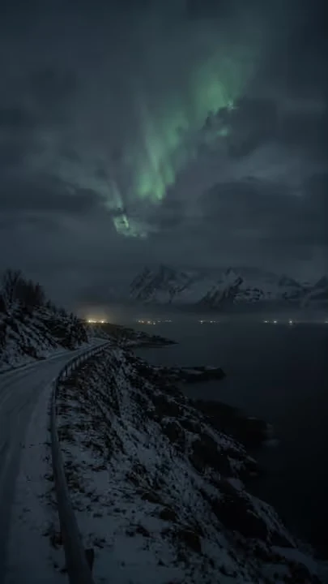
17Watch video@vpolariss
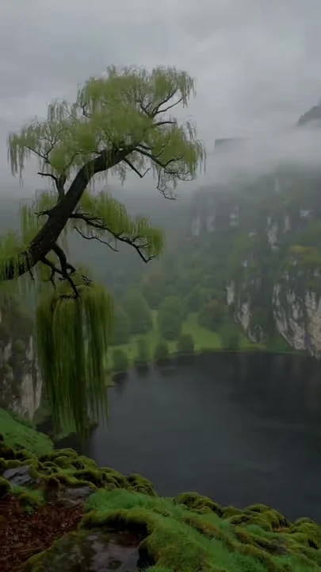
18Watch video@vjubzzs
Selected from each account's popular posts. Views checked October 21, 2026. Titles are portfolio labels.
02 / Behind the work
UC Riverside
Business Administration & Analytics
Class of 2028
Good content takes testing, judgment, and follow-through.
I study Business Administration & Analytics at UC Riverside and work across social content, growth marketing, and AI-assisted production. I'm interested in how people discover a product, what holds their attention, and what makes them come back.
I've built three TikTok accounts by experimenting with formats, sounds, visual styles, and publishing strategies, then learning from retention and engagement. I've also delivered campaigns for 40 clients, managing briefs, approvals, publishing, and performance reporting.
Understand the audience, the objective, and what a successful result would look like.
Test formats, messaging, and production approaches. Keep the useful changes and try again.
Use performance data and audience feedback to decide what to do next.
03 / Experience
Experience across content production, product marketing, audience development, and AI operations.
Creative strategy, production, publishing, and performance reporting across three TikTok accounts. End-to-end campaign delivery, from the first brief through launch.
Product-led LinkedIn content for an early-career job discovery platform. Testing positioning and calls to action, then using referral performance to shape the next experiment.
Turning product use cases into social content. Owning ideation through publishing and using watch time, engagement, and audience feedback to refine creative direction.
Built AI-assisted production workflows and evaluated generative models for visual quality, consistency, and scale. Standardized the process from creative concept to finished asset.
Selected tools & disciplines / Premiere Pro · Photoshop · CapCut · Generative AI · Creative testing · Social analytics · Campaign strategy
04 / What's next
Let's talk creative strategy, growth marketing, or applied AI.
Résumé available on request.